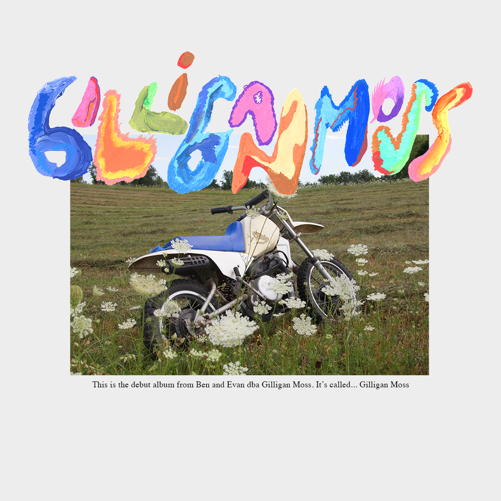
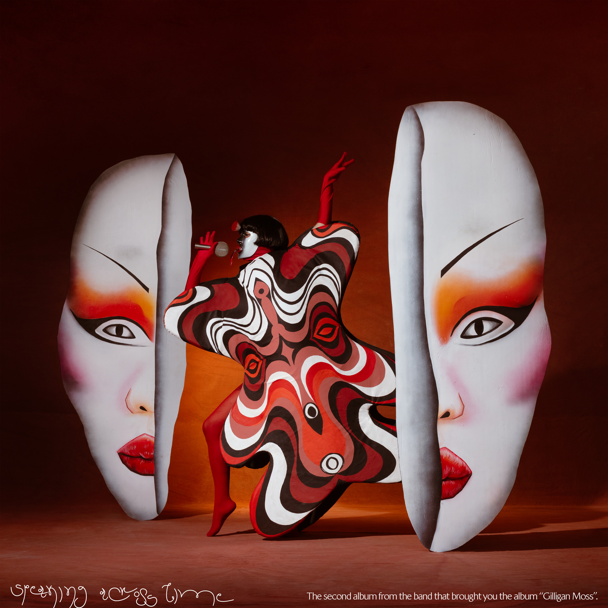

Speaking Across Time A La Mode
A La Mode
 Ceremonial
Ceremonial
 BMO's Mixtape
BMO's Mixtape
 Will You Bring The Rain?
Will You Bring The Rain?


Credits
As Gilligan Moss — Releases
- Ceremonial EP2018
- Gilligan Moss (self-titled LP)2021 · Foreign Family Collective / Ninja Tune
- Speaking Across Time2024 · Foreign Family Collective
- A La Mode EP2025
- Adventure Time: BMO's Mixtape2020 · Cartoon Network
Remixes
- Glass AnimalsRemix
- ODESZARemix
- Sébastien TellierRemix
- Yoke LoreRemix
Production & Songwriting
- Chloe FrenchForthcoming
- PollenaForthcoming
- Yellow ShootsProduction
- Love LanguageProduction
- Payday RecordsSongwriter, published
Live
- ODESZATour support
- Sylvan EssoTour support
- CoachellaFestival
Visual & Video Collaborators
- Orly AnanArt direction
- Nejc PrahArt direction
- "World Service" (feat. Betsy)Music video
- "Slow Down"Music video
- "Who Loves You" (edited by Ben)Music video
Other
- scape.radioGenerative music — 10,000 pieces
- Recipe IndexCooking app — recipeindex.org
- Two SongsMusic newsletter
- Colorado CollegeTeaching, music production
- sadboy.fmA&R
- Wythe HotelEvents

About
Hello! I'm Ben.
I love making my own and helping others to make their sounds. Music is magic — it is wiggly air, and I love creating and filling space with it. I am primarily interested with texture, contrast, arrangement and play — it's important to me that music surprises a listener and pulls at the ear to say "hey, listen to this!" Being Experimental(TM) is a motto, and — as a student of psychoanalysis — I believe in the uncanny truth and wisdom of the quieter parts of our creative minds. Intuition, even!
I'm a generalist; I am a songwriter published by Payday Records. I've released my own music on Ninja Tune, Foreign Family Collective and Universal Music. I love writing, producing, mixing — and I really love helping others poke and prod at their music.
I'd love to make a record together, or help with yours — please let me know if you'd like to connect.